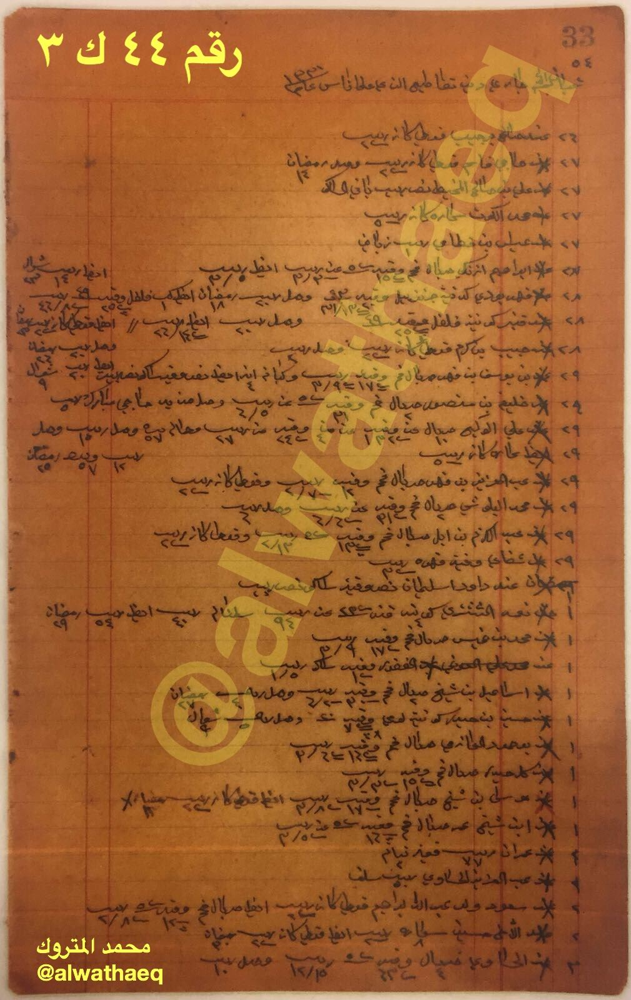
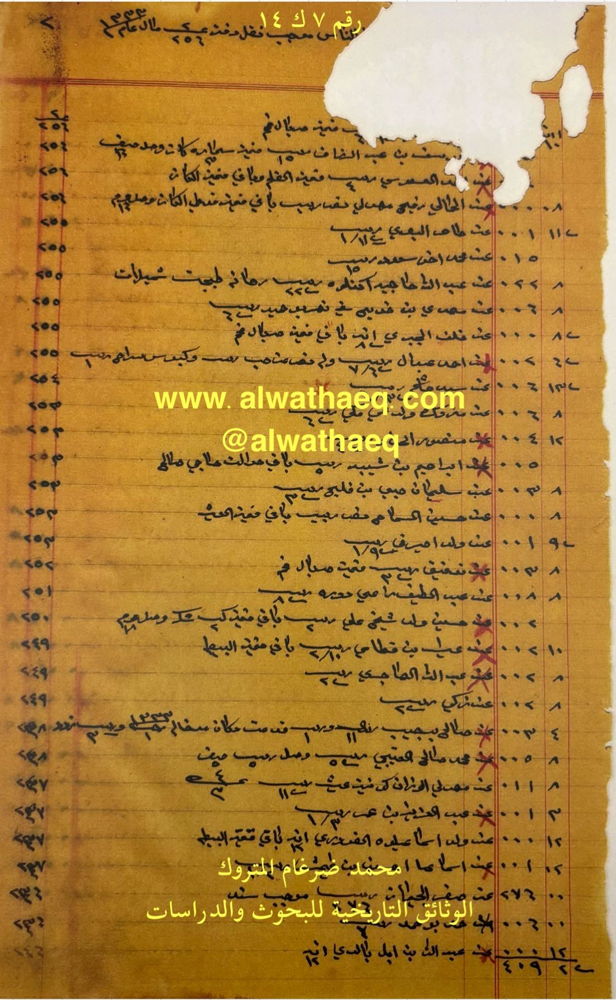
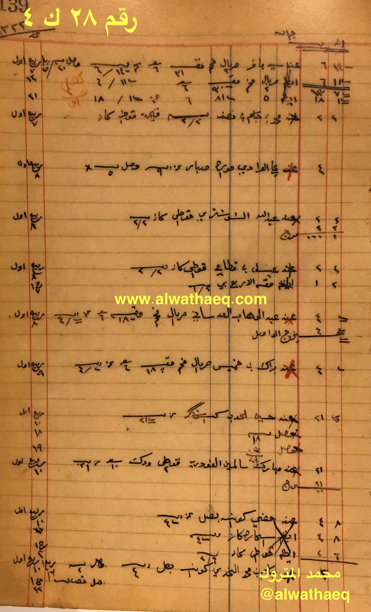

١٩١٢ إلى ١٩١٥ · كشوف حساب التاجر الكويتي محمد بن عبدالله المتروك
عيسى بن قطامي النوخذة الملاح في دفاتر المتروك
ما هي
يرد اسم عيسى بن قطامي في ثمانية دفاتر بين ١٩١٢ و١٩١٥. وفي حساب عام ١٩١٥ يدفع ليرة واحدة قيمتها ١٣ روبية و١٣ آنة.
أهميتها
سجلات معاصرة لعيسى عبدالوهاب القطامي، مؤلف كتاب الملاحة بالنجوم، وهو يتاجر في الكويت في حياته.
من المقصود
أكدت العائلة أن عيسى بن قطامي في سجلات الكويت في هذه الفترة هو عيسى بن عبدالوهاب الملاح (١٨٧٠ إلى ١٩٢٩).
صور الصفحات





النص الأصلي
ملاحظات
مقتطفات مطبوعة كما نشرها موقع الوثائق. وجميع الدفاتر الخمسة التي تذكره محفوظة في درايف العائلة.
المصادر
موقع الوثائق (alwathaeq.com): دفاتر ورسائل التاجر الكويتي محمد بن عبدالله المتروك، مع شرح وتعليق محمد ضرغام المتروك. الصور كما نشرها موقع الوثائق.
مرجع الأرشيف
- Document 101, book 8 · 1915
- Document 108, book 5 · 1914
كيف كُتب هذا النص: المقتطفات العربية كما نشرها موقع الوثائق. الترجمة الإنجليزية من Claude، يرجى مراجعتها.
افتح في الموقع التفاعلي